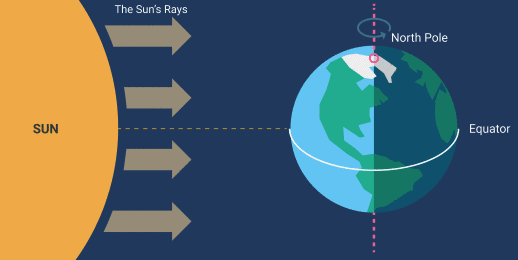

The porpouse of this project was to make suffer some students with crazy questions worthy of an flat-earther. Is it true that once you get closer to the equator you'll feel more and more heat. At first glance it seems easy to answer, but when they ask you for some proofs, it becomes difficoult to say a word. As long as we are not scientist, we have to answer this questions with our new Data Analyst superpowers. And here you can check our magnificent results.
